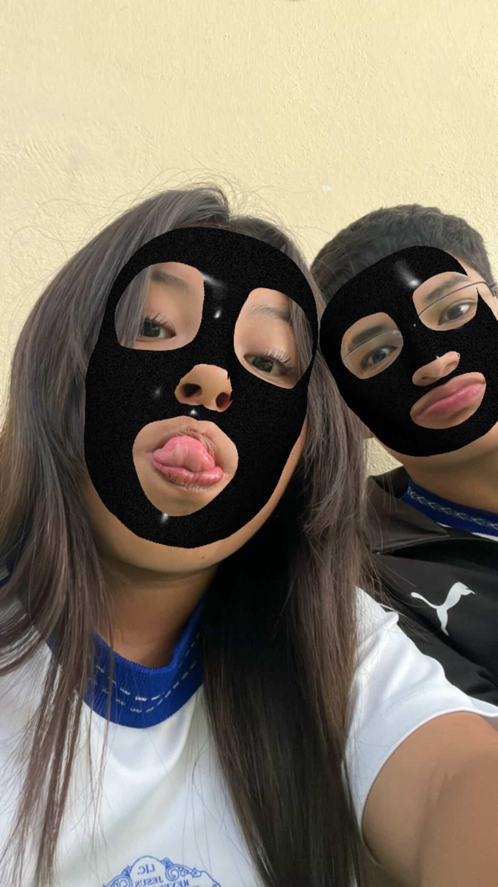
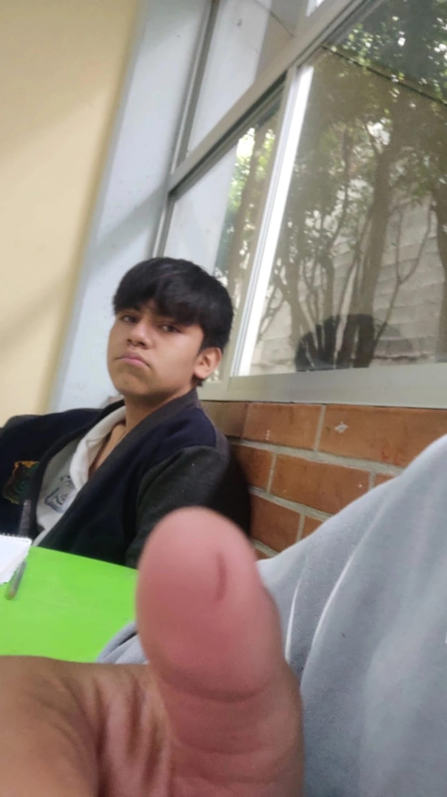
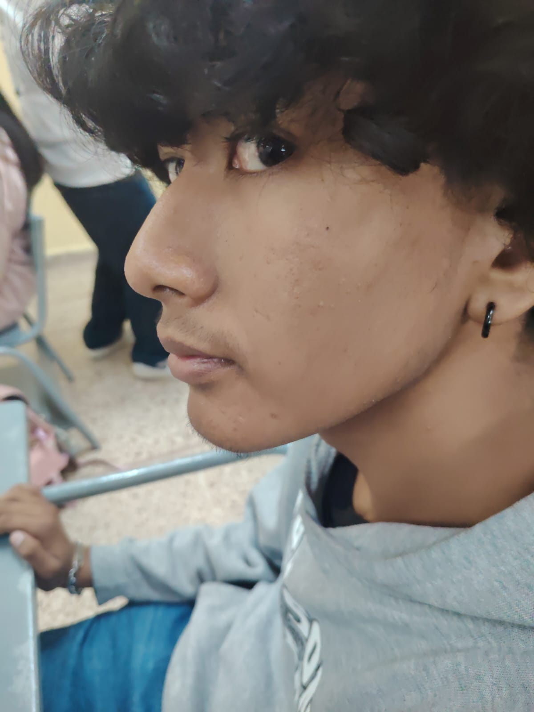
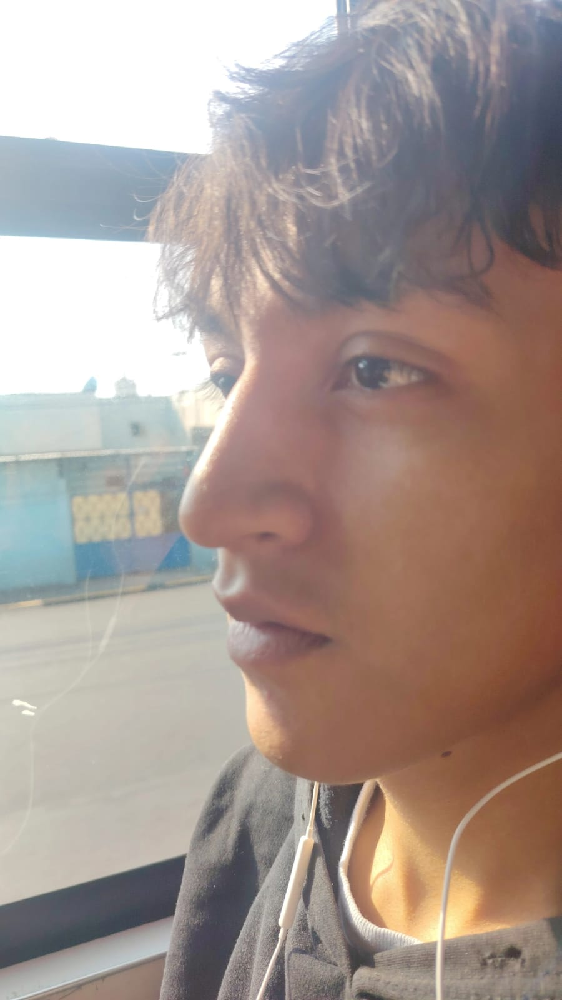
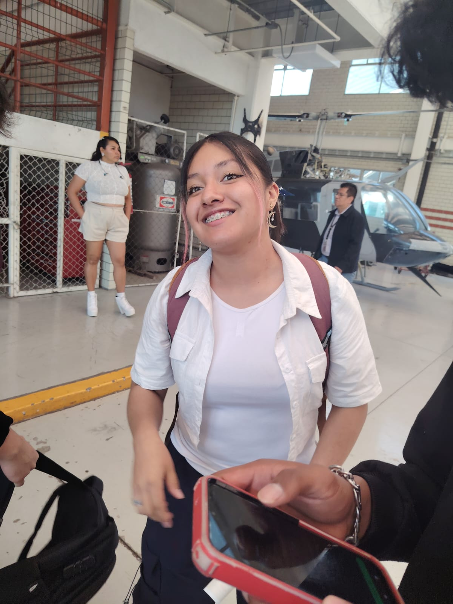

Un repaso de la gente que mas quiero de la secundaria y la prepa
Estos tres son los unicos que me quedaron de esa etapa, pero son los reales:

Lizeth Cervantes: Ella es una persona increible, me ha ayudado en momentos muy dificiles, tanto en las buenas como en las malas. Es super leal, una persona increible con la que he pasado experiencias preciosas. En general es muy buena gente y yo la quiero muchisimo, es de mis mejores amigas.
Hugo Eleazar Hernandez: A Huguito lo conoci por mensajes de Instagram. Iba en mi misma escuela secundaria. Es una persona increible; a veces es un poco serio o un poco frio, pero aun asi me ha querido mucho. Es muy buen amigo, me ha apoyado en todo lo que he necesitado, es buena gente y para nada trata de humillarme ni nada. Es literal un ¡real hasta la muerte!Ellos son los que yo considero actualmente como mis mejores amigos de esta etapa:

Alexander Linares Orozco (Linares): Muy buen amigo, hemos tenido experiencias increibles juntos, como cuando fuimos a comer pizza a Las Americas. Nos pasamos trabajos y a veces vamos a lugares nadamas a hacernos mensos. Es un poco reservado y no tan fluido, pero me cae increible, nos tratamos super bien y ojala le vaya increible en su vida. Ademas, es muy bueno jugando basquet.
Emmanuel Mota Lujan: Es un tipazo que quiero mucho y que se ha vuelto uno de mis mejores amigos. No solo porque me ha demostrado ser buen amigo, sino porque siento que no me trata de humillar ni de opacar. El tiene su personalidad, yo tengo la mia, nos llevamos super bien y es una persona increible. Al igual que Linares, es buenisimo jugando basquet.
Camila Amairani: Ella es increible, la quiero mucho, es super super buena y tiene toda mi vibra. Es literalmente una version mia pero en mujer. Buena amiga, leal y real hasta la muerte.HECHO POR URIELAITO